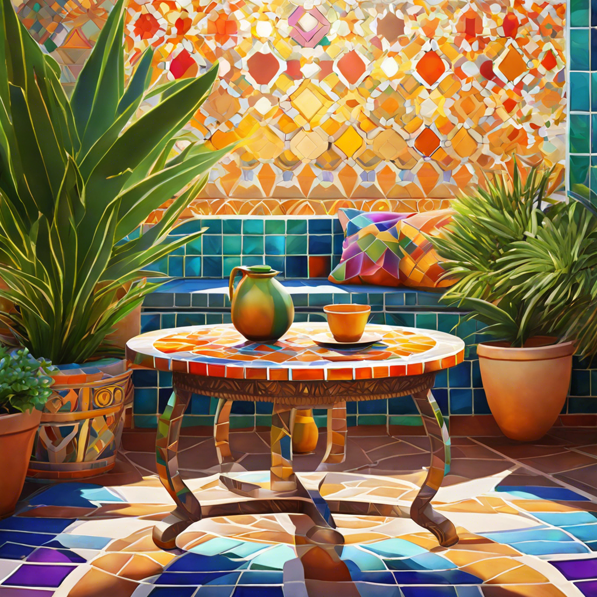

Mosaic Fantasy Table
This is a PNG that I found on a site with free non-copyrighted PNG files for the taking.
This is a neat picture from which I could draw inspiration from, seeing the possibility of using brighter colors both high and low on the vibrancy scale.